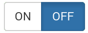

General Information:
When you see the  this is used to filter the games or results by your favourite club.
Cancelled games will be shown in a different colour
The application will automatically check for any new updates and download these only. It knows what it last downloaded so you don’t waste any data.
Clubs:
when viewing a clubs teams, in the top bar you will see a star. With this you can indicate whether you want to follow that club or mark it as favourite . You can only however have one favourite club. When you have marked a club as your favourite or are following other clubs the filter shows only games and results that involve those.
By pressing the you will be able to view the full text. Scroll to the bottom to close
By pressing the You will see the club key contacts information
By pressing the

You will go to teams, select team and you will see players and info
Standings:
Shows each competition clubs positions on the table. Turn the device on its side for more information.
News:
News is only available for your favourite club only.
PDF reader is required to be installed on the device.